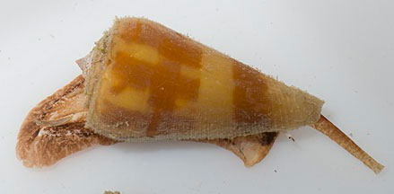
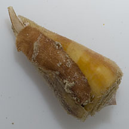
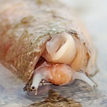
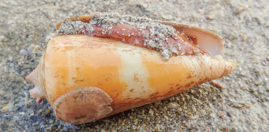
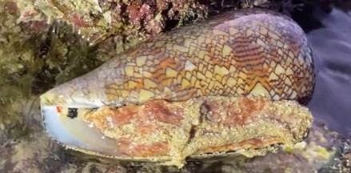
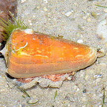
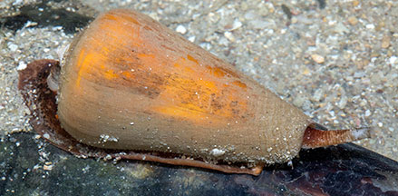
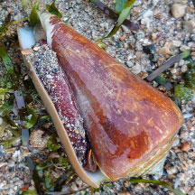
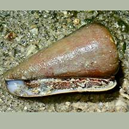
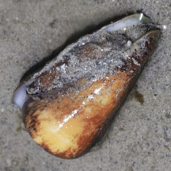

Cone
snails Family Conidae updated
Jul 2020Where
seen? Although empty shells of dead snails are sometimes
seen, living cone snails are rarely encountered. In Singapore's past,
they were seen on rocky shores, reef flats and reefs.
Features: 5-10cm. Shell is heavy,
conical with a flattened end, somewhat like an ice-cream cone. Although
some cone snails have pointed tips or are olive-shaped. The shell
opening is a narrow slit. The operculum is a tiny long sliver of horn-like
material. The colourful shell patterns of many species may be hidden
under a thick 'hairy' growth (periostracum). Others are glossy as
they spend most of their time burrowed into sand, where they lie in
wait for passing prey.
This slow-moving snail relies on its fast acting venom to rapidly
immobilise and kill prey. The radula is modified into a hollow tooth
that the snail shoots out like a harpoon to inject a potent toxin
into prey (Here's a photo
of the harpoon on The Gladys Archerd Shell Collection website).
The harpoon remains embedded in the prey. The harpoon is attached
to the snail with a chord. Once the prey is paralysed (usually in
seconds), the snail retracts the cord and engulfs the prey. It can
take a cone snail several hours to digest its prey. The snail can
'reload' a new harpoon to replace a used one.
Sometimes mistaken forOlive
snails (Family Olividae) which tend to be more tapered on both
ends of the shell, resulting in a more olive-like shape.
What do they eat? Cone snails
are predators. They feed on worms, other snails and small fishes.
Many are only active at night, hiding during the day.
Human uses: Cone snails are mainly
collected for their attractive shells for the shell trade. Research
on their toxins have resulted in some medical applications to help
humans cope with pain and diseases.
Status
and threats: The Textile cone (Conus textile) is
listed as 'Vulnerable' on the Red List of threatened animals of Singapore.
It used to be found in Singapore coral reef areas up till the 1970s
but is now extremely rare. The Singed cone (Conus consor) is
also listed as 'Vulnerable' on the Red List of threatened animals
of Singapore. It used to be the most common cone species seen in Singapore's
rocky shores in the past, but now seldom seen due to degradation or
reclamation of natural rocky shores.

Singed cone snail (Conus consors)
Cyrene Reef, Aug 13

Underside.
Cyrene Reef, Aug 13
Deadly
cone! The cone snail is one of the most
dangerous animals on Singapore shores. The snail can inject
bare hands and bare feet of swimmers and shore explorers
in shallow water. Its tiny 'harpoon' is hardly felt so
victims are often unaware until they show symptoms of
envenomation.
The best recourse is to bring the victim to hospital immediately.
What is the effect of a cone
snail's sting? Although the sting is painless,
the effect on humans can be fatal. Here's a description:
Local stinging is followed within minutes by numbness,
or tingling/burning skin and localised tissue death. Serious
stings may result in nausea, headache, loss of coordination,
blurred vision, speech and hearing, general paralysis,
coma, and respiratory failure within hours. Death is typically
due to respiratory failure from paralysis of the diaphragm
or heart failure. The Geographic cone (Conus geographus),
which produces the most potent conotoxins found to date,
may produce rapid brain swelling, coma, respiratory arrest
and heart failure. Death has been documented within 5
hours in a C. geographus envenomation. No antivenin
is available for cone shell envenomation. In significant
envenomations, symptoms may take several weeks to resolve. From Conidae
on MedScape Reference How to stay safe: Do not handle any snails that appear conical. If you are
not sure what the snail is, don't handle it. Do not collect
snails in open bags or plastic bags which harpoons can
penetrate to hit bare skin. Use hard containers when collecting
specimens (which in Singapore should only be done with
a valid permit). Do not dig into sand with bare hands.
Cover all skin near the ground by wearing covered shoes and long pants.
Photo
shared by Che Cheng Neo on facebook Conus achatinus: ID by Yan Le Su.

Big Sisters Island, Oct 19 Photo shared by
Vincent Choo on facebook.

Big Sisters Island, Oct 19 Photo shared by
Vincent Choo on facebook.

Small Sisters Island, Jul 23 Photo shared by
Kelvin Yong on facebook.

Cyrene Reef, Nov 17 Photo shared by Loh Kok Sheng on facebook.

Cyrene Reef, Aug 16 Photo shared by
Marcus Ng on flickr.

Cyrene, Sep 22 Photo shared by Richard Kuah on facebook.

Terumbu Pempang Laut, Aug 21 Photo shared by Toh Chay Hoon on facebook.

Terumbu
Pempang Laut, Jul 25 Photo shared by Richard Kuah on facebook.
Sisters Island, May 2018
Cyrene
Reef, Aug 2013
shared by Heng Pei Yan on her
blog.
Family
Conidae recorded for Singapore from
Tan Siong Kiat and Henrietta P. M. Woo, 2010 Preliminary Checklist
of The Molluscs of Singapore.
in red are those listed among the threatened
animals of Singapore from Davison, G.W. H. and P. K. L. Ng
and Ho Hua Chew, 2008. The Singapore Red Data Book: Threatened
plants and animals of Singapore.
^from WORM
Family
Conidae on The Gladys Archerd Shell Collection at Washington
State University Tri-Cities Natural History Museum website: brief
fact sheet on moon snails with photos.
Family
Conidaein the Gastropods section by J.M. Poutiers in the FAO Species
Identification Guide for Fishery Purposes: The Living Marine Resources
of the Western Central Pacific Volume
1: Seaweeds, corals, bivalves and gastropods on the Food and
Agriculture Organization of the United Nations (FAO) website.
A sighting of the turtle cone shell, Conus achatinus, 22 January 2020, Calvin Jiah Jay Leow, Singapore Biodiversity Records, 2020: 8 ISSN 2345-7597, National University of Singapore.
References
Ron K. H. Yeo & Tan Heok Hui. 30 April 2020. Recent sightings of the textile cone in Singapore. Singapore Biodiversity Records 2020: 41-42 ISSN 2345-7597
Royston Koh Lai Peng. Cone snail, Conus caracteristicus, at East Coast Park. 31 July 2018. Singapore Biodiversity Records 2018: 75 ISSN 2345-7597. National University of Singapore.
Toh Chay Hoon and Tan Siong Kiat. 12 September 2014. Marbled cone snail at Pulau Hantu, Conus marmoreus. Singapore Biodiversity Records 2014: 256.
Toh Chay Hoon. 16 May
2014. Cone
snail (Conus recluzianus) at Lazarus Island Singapore Biodiversity Records 2014: 135-136
Tan Siong
Kiat and Henrietta P. M. Woo, 2010 Preliminary
Checklist of The Molluscs of Singapore (pdf), Raffles
Museum of Biodiversity Research, National University of Singapore.
Davison,
G.W. H. and P. K. L. Ng and Ho Hua Chew, 2008. The Singapore
Red Data Book: Threatened plants and animals of Singapore.
Nature Society (Singapore). 285 pp.
Abbott, R.
Tucker, 1991. Seashells
of South East Asia.
Graham Brash, Singapore. 145 pp.
Gosliner,
Terrence M., David W. Behrens and Gary C. Williams. 1996. Coral
Reef Animals of the Indo-Pacific: Animal life from Africa to Hawaii
exclusive of the vertebrates
Sea Challengers. 314pp.